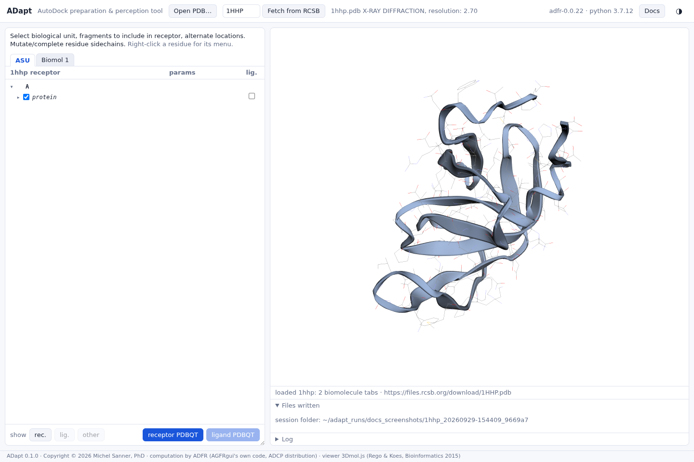

Dock into the biological assembly, not the asymmetric unit
1HHP, HIV-1 protease. The asymmetric unit holds one of the enzyme's two chains; the pocket is only complete in the dimer.
HIV-1 protease is a homodimer, and its active site lies at the interface: each of the two chains contributes one catalytic aspartate (Asp25). In entry 1HHP the crystal's asymmetric unit contains a single chain, and the second chain is generated by crystal symmetry. A receptor built from the ASU would be half an enzyme with half a pocket.
The ASU tab

The Biomol 1 tab

The tab you are on when you press receptor PDBQT decides what is written: here, both
chains of the dimer. The file records it:
REMARK 850 AGFR biomolecule Biomol 1: chains A, 2 copies.
What the copy inherits
The tree shows only the chains of the ASU. A copy made by symmetry follows its original as follows:
| Choice made on chain A | Applied to the symmetry copy |
|---|---|
| Side-chain completion, "include as is" | yes |
| Mutation | yes |
| Receptor / ligand checkboxes | no: the copy keeps the default choice |
| Alternate location | no: the copy keeps the default location |
0 here), because reduce needs unique chain names and ADFR
does not rename them back.When there is no assembly
If a file defines no assembly, or the assembly is the ASU, there is a single tab named ASU or ASU and Biomol 1.